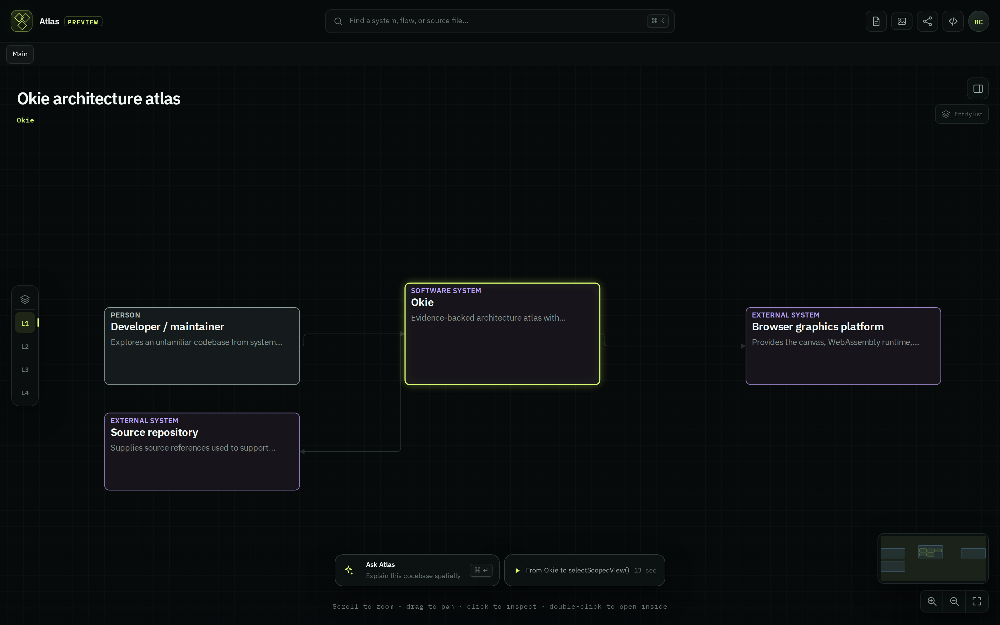

CLA-36 · Frame 1 of 4
Today every card on the map is drawn at the same size, the same border weight, and the same three-line density, whether it is the system you are reading or a dependency four hops away. The lime accent is spent in nine places at once, so it stops meaning “you are here”. This frame ranks the map instead: one focus, a handful of context, everything else demoted to a labelled chip.
Today — shipped on main
/?fixture=okie&backend=canvas2d · screenshot, not a mock

Proposed
Ranked canvas · chrome demoted below the map · one accent per frame
Okie · 1 system · 3 neighbours
--mock-chrome-text, which is quieter than a periphery node. Nothing in the frame competes with the map for first read.L1 Context beats L1. The labels already exist in semanticLensEngine.ts; today they are only exposed to screen readers.system:okie and pushes the context peers off-screen — see the gap between the two images above.